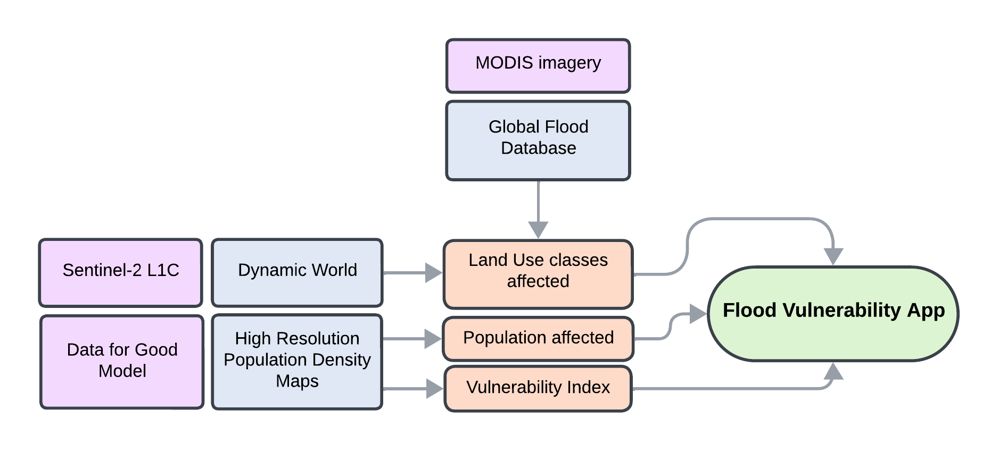

Sense It, Map It, Sorted - Flood Risk in Pakistan
Project Summary
Problem Statement
What is the problem you’re trying to address using this application?
Pakistan has one of the highest disaster risk levels globally. Flooding is the main hazard contributing to disaster risk in Pakistan. The country has high exposure to different types of flooding including riverine, flash and coastal flooding as well as tropical cyclones and high social vulnerability driven by multi-dimensional poverty. Flood risk and damage assessments exist at the national level, however, local level data on flood risk is missing. Local governments need such data for their jurisdictions in order to access adaptation funding and direct investment to the areas with highest risk.
End User
Who are you building this application for? How does it address a need this community has?
This application is built for local governments in Pakistan. Flood risk adaptation is at the top of the political agenda for divisional (second tier) and district (third tier) governments. In the devastating floods of 2022, one-third of the country was under water, 33 million people affected, and around 8 million people displaced. This application helps second and third tier governments in Pakistan to understand flood risk locally and support adaptation investment decisions in multi-level governance systems. The end user wants to know: Which areas are prone to flooding and what is the impact on people and the economy?

Data
What data are you using?
The application uses the following data sources:
- Flood events: The Global Flood Database contains 913 flood events between 2000-2018 globally and is based on MODIS imagery. Each pixel is classified as water or non-water at 250m resolution where permanent water is masked out using the Global Surface Water dataset.
- Population: High Resolution Population Density Maps (HRSL) from Data for Good.
- Land use: The Dynamic World Dataset contains near real time Land Use Land Cover classification based on Sentinel 2 imagery from 2015 to present. Only the classes “bulit up” and “crops” are used for the application.
Methodology

How are you using this data to address the problem?
The data is used to develop an indicative flood risk map for Pakistan. The Sendai Framework, the global guideline for disaster risk reduction, defines risk as a function of hazard, exposure and vulnerability. The assumption of this analysis is that areas that flooded in the past are likely to flood again. Hence, using a cumulative analysis of flood events over 18 years, the occurrence of floods is used as a proxy for exposure. A vulnerability index is calculated as a product of the raw population count and the number of past floods. The results are combined into an integrated application.
Interface
How does your application’s interface work to address the needs of your end user?
Local governments in Pakistan need a simple to use application that allows for rapid identification of flood risk locally with a simple presentation of data without technical jargon. The interface has two layers. On the first (left-hand side), the user can select a division and retrieve comparative information about affected districts. On the right hand side, the user can select a district and to explore effected population, land use and vulnerability. Based on this data, local governments can identify areas that are prone to flooding with high impact on people and the economy.
The Application
How it Works
Use this section to explain how your application works using code blocks and text explanations (no more than 500 words excluding code):
Three main parts of analiysis
Our project is split into 3 main parts that use different data sources: population, land-use, and vulnerability. The app.js file collects the different data layers and parts of analysis into one integrated app, deployed as a live Google Earth Engine Application. Each element is described in detail below.
Population & Land Use Analysis
When the user selects a district (regional subdivision) and requests analysis of population breakdown or land use, data is aggregated from the appropriate data (population data from Data for Good and land use data from Dynamic World) using an asynchronous function. The case for land use is seen below, where an area and percentage of each landcover class is calculated using a reducer applied to pixels of a certain land class type, before being added to arrays which store the full set of areas and percentages for each type.
totalArea.evaluate(function(result){
var pixelArea = result.label_mode;
totalAreasqkm = pixelArea * (300 * 300 / 1000000);
var areaPerClass = {};
var pctPerClass = {};
var completedCount = 0;
for (var i = 0; i < CLASS_NAMES.length; i++) {
(function(index) {
var filteredLandUseData = landuseData.updateMask(landuseData.eq(index));
var classCount = filteredLandUseData.reduceRegion({
reducer: ee.Reducer.count(),
geometry: region,
scale: 300,
maxPixels: 1e9
});
classCount.evaluate(function(result) {
var pixelCount = result.label_mode;
var pixelArea = pixelCount * (300 * 300 / 1000000);
areaPerClass[CLASS_NAMES[index]] = pixelArea;
pctPerClass[CLASS_NAMES[index]] = 100 * pixelArea / totalAreasqkm;The multiplier (300 * 300 / 1000000) is a conversion from pixels to square kilometres (specific to the scale of this reducer). Population calculations applied a sum reducer instead of a count reducer, separated by age band.
var populationByAgeBand_aoi = HRSL_collection.reduceRegion({
reducer: ee.Reducer.sum(),
geometry: aoi.geometry(),
scale: 30,
maxPixels: 1e13
});These calculations were carried out twice for both population and landcover to give a breakdown across the entire district as well as across all parts of the district ‘affected by flooding’, meaning these areas have had floods recorded in the Global Flood Database. This information is stored in a raster and accessed through the following code:
var region_flooded = UI_functions.getFloodedInAoi(region, globals.cumulativeFlooded);The processed data is visualized using the createChart function, generating interactive column charts displaying the population distribution by age band. The createText function provides informative text describing the population distribution.
function createChart(dataTable, title) {
return ui.Chart(dataTable)
.setChartType('ColumnChart')
.setOptions({
title: title,
titleTextStyle: { fontSize: 18 },
hAxis: { title: 'Age Band', textStyle: { fontSize: 10 }, showTextEvery: 1 },
vAxis: { title: 'Percentage', format: 'percent', viewWindow: { min: 0 }, gridlines: { count: -1 } },
legend: { position: 'none' },
bar: { groupWidth: '75%' },
chartArea: { width: '150%', height: '70%' },
annotations: { alwaysOutside: true },
tooltip: { isHtml: true }
});
}function createText(chartData) {
var totalPopulation = chartData.reduce(function(sum, data) { return sum + data.population; }, 0);
return 'Most populous age band is ' + chartData[2].label + ' with ' + chartData[2].population.toLocaleString() + ' inhabitants, representing ' + chartData[2].percentage.toFixed(1) + '% of the population, followed by ' + chartData[1].label + ' with ' + chartData[1].population.toLocaleString() + ' inhabitants, representing ' + chartData[1].percentage.toFixed(1) + '%. It is important to consider the needs of the most vulnerable groups: Children aged 0-5 with ' + chartData[0].population.toLocaleString() + ' inhabitants, representing ' + chartData[0].percentage.toFixed(1) + '% and Elderly aged 60 and above, who represent ' + chartData[3].population.toLocaleString() + ' inhabitants, representing ' + chartData[3].percentage.toFixed(1) + '% of the population respectively. These groups require special attention during emergencies such as flooding events due to their increased vulnerability.' +
' The total population in the AOI is ' + totalPopulation.toLocaleString() + ' inhabitants.';
}Vulnerability Index
Using the HRSL data and the GFD, The vulnerability index is a product of the raw population count and the number of flood occurrences, calculated as below:
var vulnerabilityIndex = clippedHRSL.multiply(clippedCumulativeFlooded);The resulting vulnerability index identifies the most vulnerable sub-regions. The vulnerability_index_chart function visualizes the mean vulnerability index for the top 10 most vulnerable sub-regions using an interactive column chart.
var vulnerability_index_chart = function(aoi) {
var l2_list = aoi.aggregate_array('ADM2_NAME').distinct().getInfo().sort();
var result = ee.FeatureCollection(l2_list.map(function(l2_name) {
var roi = aoi.filter(ee.Filter.eq('ADM2_NAME', l2_name)).first();
var feature = calculateMeanVulnerability(roi);
return feature;
}));
var sortedResult = result.sort('mean_vulnerability_index', false);
var top10Result = sortedResult.limit(10);
var chart = ui.Chart.feature.byFeature(top10Result, 'ADM2_NAME', 'mean_vulnerability_index')
.setChartType('ColumnChart')
.setOptions({
title: 'Mean Vulnerability Index per sub-region',
hAxis: {title: 'Region (l2)', slantedText: true, slantedTextAngle: 45},
vAxis: {title: 'Mean Vulnerability Index'},
legend: {position: 'none'},
height: 200,
width: 1000,
series: {
0: {color: '#D83220'}
}
});
return chart;
};Given, that population data is at a high resolution (30m), when mapping this layer, we use a smoothing kernel of size 500m kernel, in order to make its visualisation prettier. This is done using the function below:
var kernel = ee.Kernel.square({
radius: 500,
units: 'meters'
});
var interpolate = function(image) {
var smoothed = image.focal_mean({kernel: kernel, iterations: 1});
var filled = image.unmask(smoothed);
return filled;
};
var smoothedVulnerabilityIndex = interpolate(vulnerabilityIndex).updateMask(interpolate(vulnerabilityIndex).gt(0));User Interface and Interaction
The user interface is constructed from the map and 2 panels - one on the left controlling the regional (level 1) level, and on the right the district (level 2) level of analysis. Switching between these 2 levels is controlled by buttons on the corresponding UI.
// buttons to control levels
// button to deep dive into district, located in the left panel
var zoom_in_button = ui.Button({
label: "Zoom into district level",
onClick: function(){
// add and reset panel on the right
ui.root.add(right_panel);
update_l2_selection(select_l1.getValue());
// disable self
zoom_in_button.setDisabled(true);
},
});
// button to zoom out to regional level, located on right panel
var zoom_out_button = ui.Button({
label: "Zoom out to regional scale",
onClick: function(){
// remove panel
ui.root.remove(right_panel);
// re-enable zoom_in_button
zoom_in_button.setDisabled(false);
// run analysis for regional level
l1_analysis(select_l1.getValue());
},
});Each level of analysis is defined under a function, with the structure shown in the pseudo-code below. In the L2 level analysis, the selection of criteria dictates the analysis, thus a switch structure is used.
// function that runs the analysis for region level
// analysis is run on the region with the name given
function l1_analysis(l1_name){
// extract area of interest
var aoi = globals.gaul_l2.filter(ee.Filter.eq('ADM1_NAME', l1_name));
// update selection for l2 area
update_l2_selection(l1_name);
// update summary text and vulnerability chart
var summary_text = createText(1, l1_name);
var vi_chart = vulnerability_index_chart(aoi);
// visualise on map
UpdateMap();
// updating UI
// the UI is updated by overwriting the widgets with appropriate ones
left_panel.widgets().set(7, summary_text);
left_panel.widgets().set(10, vi_chart);
}
// function that runs the analysis for district level
function l2_analysis(l2_name){
// update view so that it shows it's still loading
right_panel.widgets().set(4, ui.Label('Loading......', vis.text_style.text));
right_panel.widgets().set(5, ui.Label('Loading......', vis.text_style.text));
// extract area of interest
var aoi = globals.gaul_l2.filter(ee.Filter.eq('ADM2_NAME', l2_name));
// and flooded areas
var aoi_flooded = UI_functions.getFloodedInAoi(aoi, globals.cumulativeFlooded);
// get l1 area
var l1_name = select_l1.getValue();
var l1 = globals.gaul_l1.filter(ee.Filter.eq('ADM1_NAME', l1_name));
// placeholder for chart
var chart = ui.Label();
// Initialise on map
Map.clear();
Map.centerObject(aoi);
// switch between criterias based on selection in dropdown
switch(select_analysis_criteria.getValue()){
// vulnerability
case criterias[0]:
vulnerabilityStats(aoi);
break;
// land use
case criterias[1]:
landuseStats(aoi);
break;
// population
case criterias[2]:
popStats(aoi);
break;
}
// add AOI to map
UpdateMap();
}Each function is called under the following conditions with the name of AOI as the argument:
Regional level analysis
- when region selection is updated (in left panel)
- when zooming out
District level analysis
- when district selection is updated (in right panel)
- when criteria selection is updated (in right panel)
- when zooming in
Since the same function is called for each level, this is implemented with the following code structure within the onChange.
// UI components calling analysis
var any_ui_component = ui.Select({
onChange: function(selectedValue){
l1_analysis(selectedValue);
// l2_analysis(selectedValue) for L2 level analysis
}
})Link to Code
https://github.com/jankomag/gee-flood-app